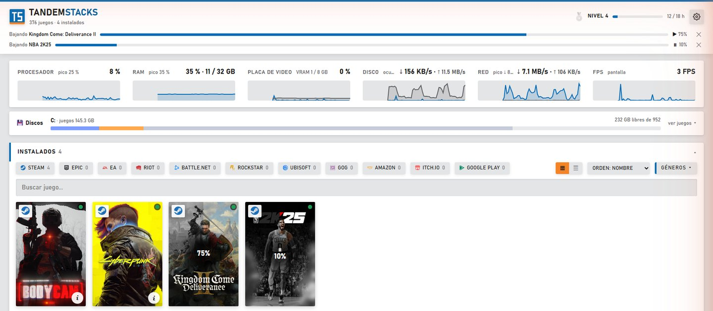
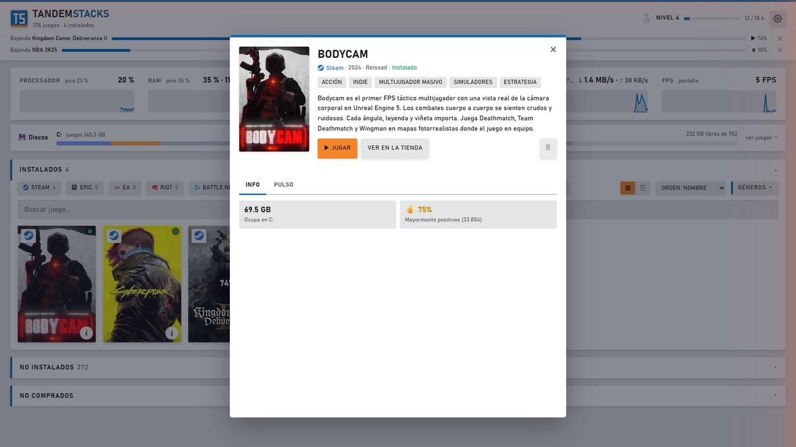
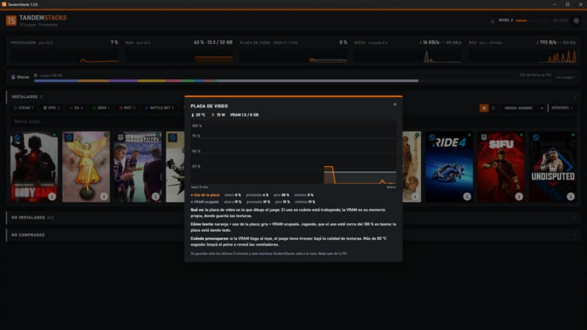
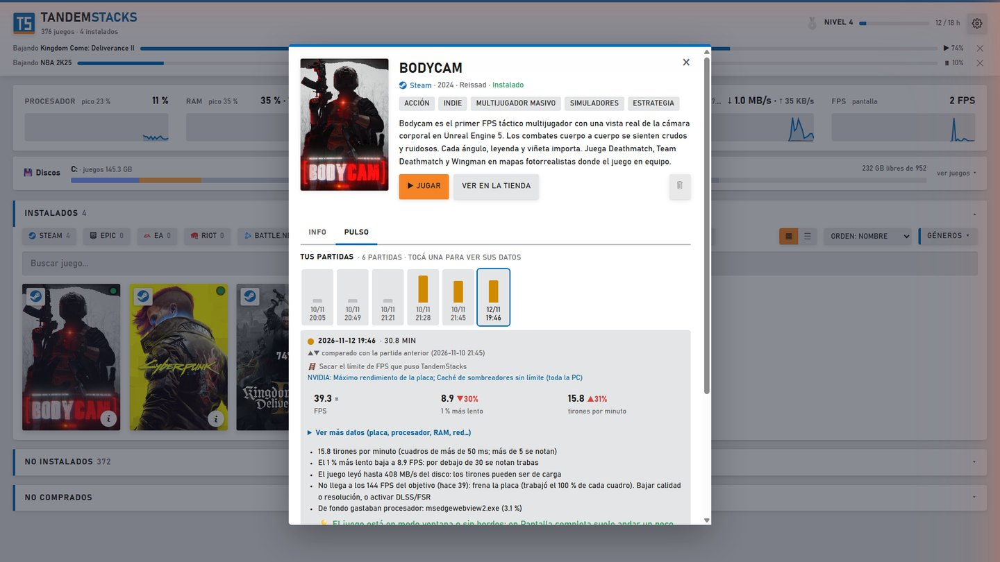
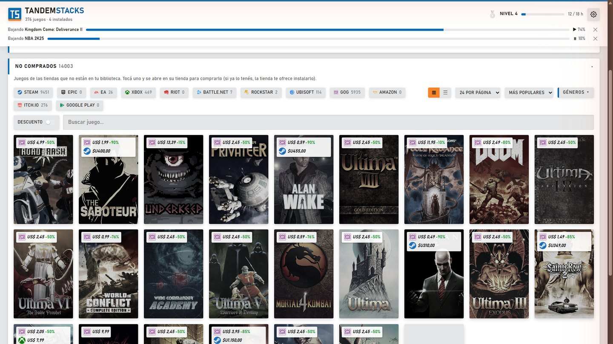

Manual de uso
TandemStacks junta en una sola pantalla los juegos de tus 12 tiendas (Steam, Epic, GOG, EA, Xbox, Riot, Battle.net, Rockstar, Ubisoft, Amazon, itch.io y Google Play) y te ayuda a que anden mejor.
No te pide contraseñas, claves ni cuentas: usa lo que ya tenés instalado en tu PC.
Instalarla y empezar
- Bajá el instalador desde la web y abrilo.
- Si Windows muestra un cartel azul que dice "Windows protegió su PC", tocá Más información y después Ejecutar de todas formas. Aparece porque la app todavía no tiene firma digital; es gratis y de código abierto.
- Seguí los pasos del instalador. Al terminar, TandemStacks se abre sola.
- La primera vez se abre la Configuración con una bienvenida: ahí ves qué tiendas encontró. No hace falta tocar nada.
La ✕ no la cierra
Tocar la ✕ esconde la ventana, pero TandemStacks sigue andando al lado del reloj. Para volver a verla, hacé clic en su ícono (las fichas apiladas). Para cerrarla del todo: clic derecho en el ícono → Salir.
Se actualiza sola: cuando sale una versión nueva, la instala al abrirse.
Ver todos tus juegos
Tus juegos aparecen solos, en tres grupos:
| Grupo | Qué tiene |
|---|---|
| Instalados | Los que podés jugar ya. |
| No instalados | Los que tenés comprados (o gratis en tu cuenta) pero no están en la PC. |
| No comprados | Juegos de las tiendas que no tenés, con su precio. Ver Buscar juegos nuevos. |

Encontrar un juego
- Buscador: cada grupo tiene el suyo, adentro. Escribí parte del nombre.
- Tiendas: tocá una o varias para ver solo esas. El número es cuántos juegos tenés ahí.
- Orden y géneros: a la derecha, para ordenar por nombre, tamaño o fecha, y elegir géneros.
- Grilla o lista: los dos botoncitos al lado del orden.
Si tenés el mismo juego en dos tiendas, aparece en una sola tarjeta con los dos logos.
¿Por qué no veo algunos juegos que tengo sin instalar?
EA, Amazon y Google Play guardan la lista de tus juegos cifrada en tu PC. TandemStacks no puede leerla sin tu contraseña, y no la pide: de esas tiendas ves solo los instalados.
De Ubisoft y Rockstar aparecen los que sus launchers ya reconocieron en tu PC. De Steam, si falta alguno, abrí Steam y entrá una vez a tu Biblioteca.
Una tienda aparece como "no está" y la tengo instalada
Andá a ⚙ → Configuración → Tiendas y pegá la ruta del programa de esa tienda (el archivo .exe) en su casillero. Después tocá Guardar y escanear.
Jugar, instalar y borrar
Jugar
Tocá la portada de un juego instalado. Al pasar el mouse aparece el botón ▶. TandemStacks le pide a su tienda que lo abra.
Ver la ficha
Tocá la i chiquita de la tarjeta. La ficha tiene dos pestañas:
- Info: descripción, géneros, año y reseñas, sacados de la web de su tienda.
- Pulso: cómo anduvo cada partida. Ver Pulso.

Instalar un juego que no tenés en la PC
Abrí No instalados y tocá el juego: se abre su tienda en la pantalla para instalarlo. Mientras baja, arriba de todo ves una barra con el nombre y el porcentaje.
Borrar (desinstalar) un juego
En la ficha, tocá Borrar. Se abre su tienda en el lugar justo para desinstalarlo. Si la tienda no tiene un comando para eso, TandemStacks te muestra unos segundos qué botón tocar.
Ver cómo anda tu PC
Arriba de todo hay 6 relojes que se mueven solos mientras la ventana está a la vista:
| Reloj | Qué muestra |
|---|---|
| Procesador | Cuánto trabaja (igual que el Administrador de tareas de Windows). |
| RAM | Cuánta memoria se está usando de la que tenés. |
| Placa de video | Cuánto trabaja la placa y cuánta memoria de video usa. |
| Disco | Cuánto lee y escribe, y qué tan ocupado está. |
| Red | Cuánto bajás y subís de internet. |
| FPS | Con un juego abierto, los cuadros por segundo del juego. Sin juego, los de la pantalla (con el escritorio quieto son pocos: es normal). |
Tocá un reloj para verlo en grande: te dice qué es, cómo leerlo, cuándo preocuparte y qué programas lo están usando.

¿Cuánto usa el juego?
Con un juego abierto, cada reloj muestra una línea blanca y la línea 🎮 Juego: es la parte que usa ese juego solo. La red no se puede separar por programa (Windows no la cuenta así).
Quiero ver la temperatura del procesador
Windows no deja leerla sin un programa especial. Si tenés MSI Afterburner (gratis) abierto, TandemStacks muestra la temperatura del procesador, sus vatios y su velocidad, y te avisa si se está frenando por calor.
Para que se abra solo con Windows: en MSI Afterburner tocá el engranaje → pestaña General → marcá "Iniciar con Windows" y "Iniciar minimizado".
¿Qué es normal?
- Procesador o placa al 100 % jugando: normal, están haciendo su trabajo.
- RAM por arriba del 90 % todo el tiempo: puede faltarte memoria; cerrá programas que no uses.
- Disco "ocupado 100 %" con pocos MB/s: el disco está trabado (pasa mucho mientras una tienda baja un juego).
- Procesador por arriba de 90 °C: se frena solo para no quemarse. Limpiá el polvo y revisá los ventiladores.
Saber por qué un juego anda mal
Pulso mide cada partida sola, sin que hagas nada: jugá con TandemStacks abierta (alcanza con el ícono al lado del reloj). Cuando cerrás el juego, te aparece un aviso con el resultado.
Para verlo después: abrí la ficha del juego (la i) y entrá a la pestaña Pulso.

| Dato | Qué quiere decir |
|---|---|
| FPS | Cuántas imágenes por segundo dibujó el juego. Más es más fluido. |
| 1 % más lento | Los FPS en los peores momentos. Si es muy bajo, se siente que "se traba". |
| Tirones por minuto | Cuántas veces la imagen se congeló un instante. Lo ideal es 0. |
| Cuadros parejos | Qué tan pareja fue la imagen. 100 % = perfecta. |
| Quién frena | Si no llegás a los FPS de tu monitor, te dice qué lo impide: la placa, el procesador o el propio juego. |
Cada partida se compara con la anterior: ▲ mejoró, ▼ empeoró, = casi igual. Tocá ¿Cómo se calcula? para ver las reglas exactas.
Pulso dice "sin FPS"
Windows no dejó medir los cuadros. Suele arreglarse agregando tu usuario al grupo de Windows "Performance Log Users" y cerrando sesión. Si no sabés cómo, preguntá en el Discord.
Que la PC no gaste de más
TandemStacks hace esto solo (podés apagar cada cosa en ⚙ → Configuración → Automático):
- Al abrir un juego, al minuto cierra las tiendas que ese juego no usa.
- Al terminar de jugar, cierra las tiendas que quedaron abiertas. Nunca cierra una que esté bajando un juego.
- Limpia la basura que dejan los juegos: informes de errores, registros viejos y cachés grandes. Nunca toca partidas guardadas ni configuraciones.
- Saca los accesos directos que las tiendas dejan en el escritorio al instalar un juego (van a la papelera).
Para cerrar todas las tiendas en el momento: ⚙ → Cerrar tiendas, o clic derecho en el ícono al lado del reloj.
Para que las tiendas no arranquen con Windows: ⚙ → Configuración → Automático → Inicio de Windows. No borra nada, y se puede volver atrás desde el Administrador de tareas.
En Configuración → Pulso y ahorro ves cuánto ahorró: tiendas cerradas, memoria y disco liberados.
Buscar juegos nuevos y ofertas
Abrí No comprados: tiene miles de juegos de las tiendas que no tenés, con el precio en tu moneda.
- Prendé Descuento para ver solo los que están en oferta (Steam, GOG e itch.io).
- Tocá un juego para abrirlo en su tienda. Si está en varias, elegís en cuál.
- Los juegos para adultos con contenido sexual no aparecen en este catálogo.

Cambiar cómo se ve
Todo está en el engranaje ⚙, arriba a la derecha:
- Modo oscuro.
- Idioma: español o inglés.
- Desvincular una tienda: tocá su nombre en la lista de tiendas → Desvincular. La esconde de TandemStacks sin tocar nada en tu PC.
- Desinstalar TandemStacks.
Nivel y medallas
Arriba ves tu nivel: sube con las horas que jugás con TandemStacks abierta, en cualquier tienda. Hay una medalla cada 5 niveles; tocá el nivel para verlas todas.
Si algo no anda
No encuentra una tienda que tengo instalada
⚙ → Configuración → Tiendas: pegá la ruta del .exe de esa tienda y tocá Guardar y escanear.
Instalé o borré un juego y no cambió
TandemStacks revisa cada pocos segundos. Si tarda, tocá ⚙ → Configuración → Volver a escanear.
No veo la ventana pero la app está abierta
Está escondida al lado del reloj de Windows (tocá la flechita ^ si no ves el ícono). Hacé clic en el ícono de las fichas apiladas.
Una portada no carga
Las portadas vienen de internet. Sin conexión ves el nombre del juego sobre un color; cuando vuelve la conexión, aparecen.
Encontré un error
Contalo en el canal #errores del Discord o escribí a tandemstacks@gmail.com. Si podés, sumá una captura.
Preguntas frecuentes
¿Es gratis?
Sí, gratis y de código abierto. No tiene publicidad ni compras adentro.
¿Me pide contraseñas o datos de mis cuentas?
No. No te pide contraseñas, claves ni cuentas: lee lo que cada tienda ya guarda en tu PC cuando tenés la sesión iniciada.
¿Usa inteligencia artificial?
No. Todo sale de archivos de tu PC, de Windows y de las webs oficiales de cada tienda. Los cálculos de Pulso son reglas fijas: los mismos números dan siempre el mismo resultado.
¿Manda mis datos a algún lado?
No. Tus partidas, tus juegos y tus mediciones quedan en tu PC. Solo se conecta a internet para bajar portadas, fichas, precios y versiones nuevas.
¿Gasta mucho la PC?
Muy poco: escondida, el visor se duerme y casi no usa nada. Con la ventana abierta usa más o menos lo mismo que una pestaña del navegador.
¿Necesito internet?
Para jugar y medir, no. Sin internet no se actualizan las portadas, las fichas ni los precios.